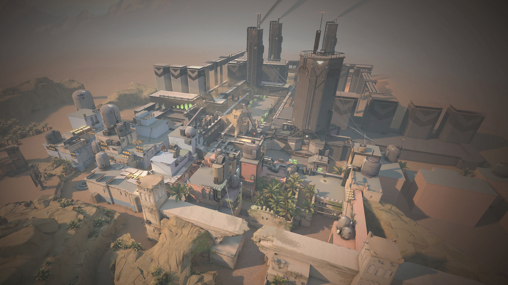
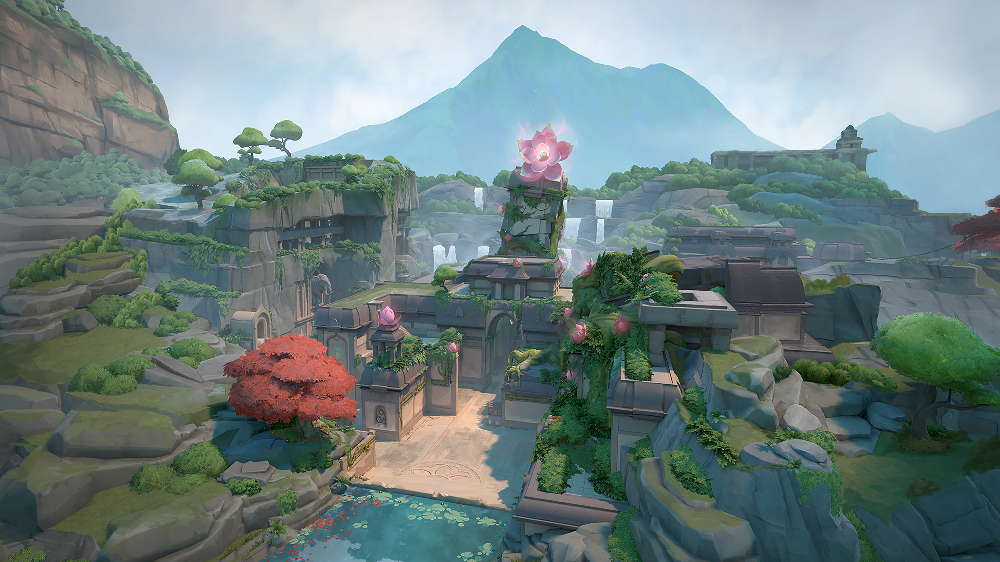
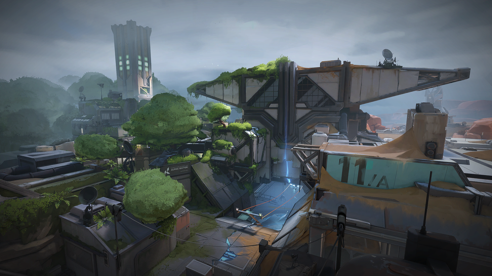

亚海悬城
A点
B点
位于意大利的经典地图，拥有开阔的中路和两个包点。A点有天堂和地狱两个高低差位置，B点则有狭窄的入口。
战术要点
- 中路控制是胜负关键
- A点天堂位置可俯瞰整个包点
- B点适合使用烟雾封锁入口
推荐特工



源工重镇
A点
B点
位于摩洛哥的地图，特色是没有中路，只有单向传送门连接两侧。A点较为开阔，B点有U型弯道。
战术要点
- 善用传送门进行快速转点
- A点需要控制浴室和短管
- B点U型弯道适合埋伏
推荐特工


隐世修所
A点
B点
C点
位于不丹的修道院地图，是唯一拥有三个包点的地图。防守方需要分散兵力，进攻方有更多选择。
战术要点
- 三个包点需要合理分配防守
- C点较为孤立，容易被夹击
- 中路窗户可控制多个区域
推荐特工


霓虹町
A点
B点
位于日本东京的地图，拥有独特的垂直设计和绳索系统。A点有塔楼高点，B点有多个层次。
战术要点
- 善用绳索快速移动和换位
- A点塔楼是必争之地
- B点车库需要烟雾掩护
推荐特工



莲华古城
A点
B点
C点
位于印度的古老遗迹地图，拥有三个包点和可破坏的旋转门。地图设计复杂，战术多变。
战术要点
- 旋转门可快速转点或包抄
- A点较为开阔，需要烟雾
- C点适合防守方埋伏
推荐特工


森寒冬港
A点
B点
位于北极的科研设施地图，拥有大量垂直空间和滑索。A点有多层结构，B点较为紧凑。
战术要点
- 垂直空间丰富，注意上方
- A点需要控制管道和天堂
- B点适合近距离作战
推荐特工
微风岛屿
A点
B点
位于加勒比海的岛屿地图，是目前最大的地图，拥有开阔的长距离交战区域。
战术要点
- 长距离交战，狙击枪有优势
- A点需要控制中路和A大厅
- B点有多个入口需要防守
推荐特工


日落之城
A点
B点
位于美国洛杉矶的地图，设计平衡，适合各种战术风格。A点较为紧凑，B点更加开阔。
战术要点
- 中路控制可快速支援两侧
- A点适合快攻战术
- B点需要控制市场区域
推荐特工


深海明珠
A点
B点
位于葡萄牙里斯本的水下城市地图，拥有独特的地下通道和开放的中路。
战术要点
- 中路是必争之地
- 地下通道可用于偷袭
- A点较为开阔，B点有更多掩体
推荐特工

裂变峡谷
A点
B点
位于美国的秘密研究设施地图，采用独特的H型设计，防守方出生在地图中央。
战术要点
- 防守方在中央可快速支援两侧
- A点和B点都有多个入口
- 绳索可快速转点
推荐特工
幽邃地窟
A点
B点
位于地下深处的神秘地图，拥有独特的无底深渊机制，掉落即死亡。地图设计紧凑，交战频繁。
战术要点
- 注意边缘，掉落深渊即死亡
- 地图紧凑，适合快攻
- 利用垂直空间进行包抄
推荐特工